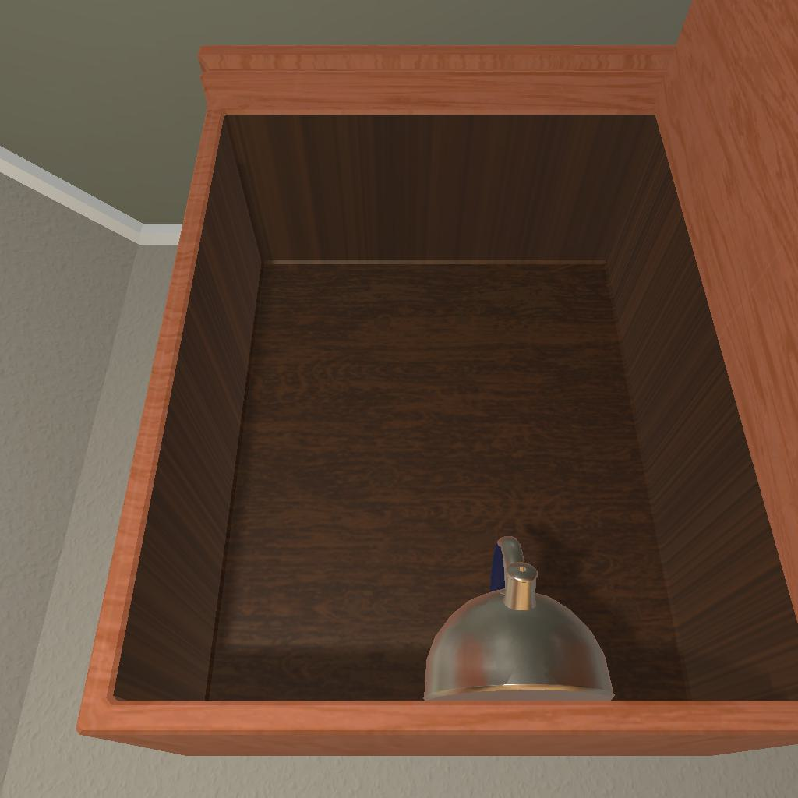

---------------------------------------------------------task: 15---------------------------------------------------------
--------------------------------------------------------------------------------------------------------------------------------------------------------------------
--------------------------------------------------------------------------------------------------------------------------------------------------------------------
Step:--------------------------------------------------------------------------9-------------------------------------------------------------------------------
----------------------------------------
VLM Prompt:
Image1:
Image2:
Image3:
**Instruction**
1. Analyze the provided images to identify all visible household objects and compare the difference between images (e.h. whether the object is opened or not and taken on hand or not), focusing on those relevant to the task description "put a cool mug in coffeemachine."
2. Use the analysis of images and the task hint "The agent must find an object of the desired type, pick it up, go to a fridge, cool the object with the fridge, then find the correct location to place it, and put it down there. The agent does not need to use the fridge button or open the fridge to cool the object, and the agent just needs to do action that is "cool the object with the fridge"." to answer the question: what is the most reasonable action in the choices for the task description "put a cool mug in coffeemachine"?
3. Decide and write the answer using the template: The answer is: (i): , where i is the real number. If there is no desired object in images, search every place based on **Initial Observation** to find the object. And if no one is exactly correct, choose a similar answer.
**Initial Observation**
You are in the middle of a room. Looking quickly around you, you can see cabinet (1-15), fridge (1), countertop (1-4), drawer (1-4), microwave (1), toaster (1), coffeemachine (1), garbagecan (1), sink (1), stoveburner (1-3), sinkbasin (1)
**Answer Choices**
(1): go to cabinet 2
(2): go to fridge 1
(3): go to countertop 1
(4): go to cabinet 4
(5): go to cabinet 5
(6): go to cabinet 6
(7): go to cabinet 7
(8): go to drawer 1
(9): go to drawer 2
(10): go to cabinet 8
(11): go to drawer 3
(12): go to cabinet 9
(13): go to cabinet 10
(14): go to drawer 4
(15): go to microwave 1
(16): go to cabinet 11
(17): go to toaster 1
(18): go to cabinet 12
(19): go to cabinet 13
(20): go to cabinet 14
(21): go to cabinet 15
(22): go to countertop 2
(23): go to coffeemachine 1
(24): go to garbagecan 1
(25): go to countertop 3
(26): go to countertop 4
(27): go to sink 1
(28): go to stoveburner 1
(29): go to stoveburner 2
(30): go to stoveburner 3
(31): go to sinkbasin 1
(32): open cabinet 1
(33): close cabinet 1
(34): take kettle 1 from cabinet 1
(35): examine cabinet 1
**Answer**
Let's think step by step by following the instructions.
----------------------------------------
----------------------------------------
Original Response:
Firstly, we need to identify if there is a mug in any of the provided images. Image1 and Image2 are identical, showing cabinet 1 closed. Image3 shows cabinet 1 opened with a kettle inside. There is no mug visible in any of the images.
According to the task description "put a cool mug in coffeemachine," we need to find a mug, cool it, and then put it in the coffeemachine. The task hint clarifies that the agent does not need to use the fridge button or open the fridge to cool the object; they just need to perform the action of cooling the object with the fridge.
Based on the initial observation, there are several cabinets, a fridge, countertops, drawers, and other appliances in the room. Since no mug is visible in the provided images, we must search for it.
The most reasonable action would be to start looking in the cabinets, as mugs are commonly stored there. Since cabinet 1 is already open and only contains a kettle, we can exclude it and move on to the next cabinets.
The answer is: (2): go to fridge 1.
----------------------------------------
----------------------------------------
>>> Refine Original VLM Response and Get Pure Action: go to fridge 1
----------------------------------------
-----------------------------------------------------------------
Running time: 11.527970314025879 seconds
Total Money: 8.710360000000007
-----------------------------------------------------------------
-----------------------------------------------------------------
Text Observation:You arrive at loc 3. The fridge 1 is closed.
-----------------------------------------------------------------
UNSUCCEED